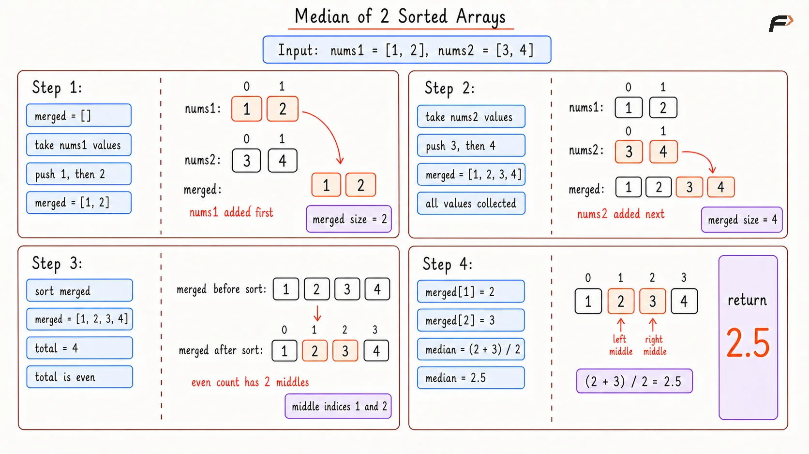
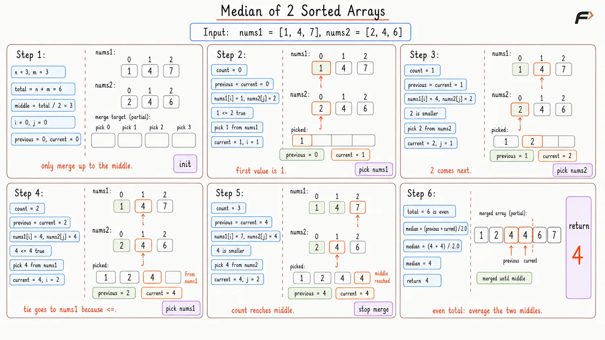
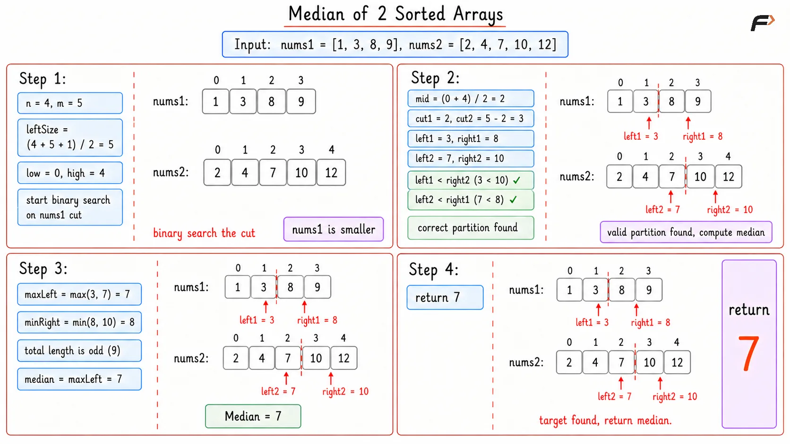

Median of 2 Sorted Arrays
Given two sorted arrays nums1 and nums2 of size M and N respectively, return the median of the two sorted arrays. The final array is formed by merging both arrays and sorting them in non-decreasing order.
The median is defined as the middle value of a sorted list of numbers. In case the length of the list is even, the median is the average of the two middle elements.
Example 1
Input: nums1 = [1, 3], nums2 = [2]
Output: 2.00000
Explanation: The combined sorted array is [1, 2, 3]. The middle element is 2, so the median is 2.0.
Example 2
Input: nums1 = [1, 2], nums2 = [3, 4]
Output: 2.50000
Explanation: The combined sorted array is [1, 2, 3, 4]. The middle elements are 2 and 3. The median is (2 + 3) / 2 = 2.5.
Brute Force Approach
The simplest thought is to put all values from both arrays into one list. Once all values are together, sorting the list gives the exact order that the problem is talking about. Then finding the median becomes a normal middle-index task. The only downside is that it sorts again, even though both arrays were already sorted.
Algorithm
Create an empty list to store all values from both arrays. This is needed because the median belongs to the combined sorted order.
Add every element from the first array and every element from the second array into the list, so no value is missed.
Sort the combined list because the median is always found from the fully sorted order.
If the total number of elements is odd, return the middle element because there is one exact center.
If the total number of elements is even, return the average of the two middle elements because the center lies between them.
Dry Run

Median of 2 Sorted Arrays Brute Dry Run
Solution
#include <bits/stdc++.h>
using namespace std;
class Solution {
public:
/*
Finds the median after putting both arrays
into one combined sorted order.
*/
double findMedianSortedArrays(vector<int>& nums1, vector<int>& nums2) {
// This stores all values from both arrays in one place.
vector<int> merged;
for (int value : nums1) {
merged.push_back(value);
}
for (int value : nums2) {
merged.push_back(value);
}
// Sorting creates the final order needed for median calculation.
sort(merged.begin(), merged.end());
// This is the total number of values after both arrays are combined.
int total = merged.size();
// If total is odd, there is one exact middle element.
if (total % 2 == 1) {
return merged[total / 2];
} else {
// If total is even, the median is the average
// of the two middle elements.
return ((double)merged[total / 2 - 1] + merged[total / 2]) / 2.0;
}
}
};
// Driver code starts
int main() {
vector<int> nums1 = {1, 2};
vector<int> nums2 = {3, 4};
Solution obj;
cout << obj.findMedianSortedArrays(nums1, nums2) << endl;
return 0;
}Complexity Analysis
Time Complexity: O((N + M) x log(N + M)), because the final list containing all elements of size N+M is sorted.
Space Complexity: O(N + M), because a separate list is created to store all elements which contains N + M elements.
Better Approach
Since both arrays are already sorted, sorting everything again is not needed. The merge step from merge sort already knows how to walk through two sorted arrays in increasing order by choosing the smaller element of the two unused elements from each array. For the median, the full merged array is also not needed. Only the middle element, or the two middle elements, matter.
So the idea is to simulate the merge process only until the middle position is reached. Keep track of the current picked value and the previous picked value. These two values are enough to handle both odd and even total sizes.
Algorithm
Keep two pointers, one for each array. These pointers show the next unused value in each array.
Run the merge process only until the middle position, by taking the smaller value of both unused value and moving the used value pointer to next. This is enough because elements after the middle cannot affect the median.
Before choosing the next value, store the current value as the previous value. This helps when the total length is even and two middle values are needed.
At each step, choose the smaller current value from the two arrays. If one array is finished, choose from the other array.
If the total length is odd, return the current middle value. If it is even, return the average of the previous and current values.
Dry Run

Better
Solution
#include <bits/stdc++.h>
using namespace std;
class Solution {
public:
/*
Finds the median by simulating the merge process
only until the middle position is reached.
*/
double findMedianSortedArrays(vector<int>& nums1, vector<int>& nums2) {
int n = nums1.size();
int m = nums2.size();
// These pointers track the next unused value in each array.
int i = 0;
int j = 0;
// previous and current store the last two picked values.
int previous = 0;
int current = 0;
// Only positions up to the middle can affect the median.
int middle = (n + m) / 2;
for (int count = 0; count <= middle; count++) {
previous = current;
// If both arrays still have values, choose the smaller one.
if (i < n && j < m) {
// nums1 is chosen when it has the smaller current value.
if (nums1[i] <= nums2[j]) {
current = nums1[i];
i++;
} else {
// nums2 is chosen because its current value is smaller.
current = nums2[j];
j++;
}
} else if (i < n) {
// nums2 is finished, so the next value must come from nums1.
current = nums1[i];
i++;
} else {
// nums1 is finished, so the next value must come from nums2.
current = nums2[j];
j++;
}
}
// If total is odd, current is the exact middle value.
if ((n + m) % 2 == 1) {
return current;
} else {
// If total is even, previous and current are the two middles.
return ((double)previous + current) / 2.0;
}
}
};
// Driver code starts
int main() {
vector<int> nums1 = {1, 2};
vector<int> nums2 = {3, 4};
Solution obj;
cout << obj.findMedianSortedArrays(nums1, nums2) << endl;
return 0;
}Complexity Analysis
Time Complexity: O((N + M) / 2), because only elements up to the middle position are processed.
Space Complexity: O(1), because constant space is used.
Optimal Approach
The median divides a sorted list into two halves.
For example, in [1, 2, 3, 4], the left half is [1, 2] and the right half is [3, 4]. The median comes from the border of these two halves.
Instead of merging both arrays, imagine cutting both arrays into a left part and a right part. The cut is correct when two things are true:
The left side contains exactly half of the total elements, or one extra when the total length is odd.
Every value on the left side is less than or equal to every value on the right side.
If those two things are true, the median is sitting right around the cut.
The trick is to binary search how many elements should be taken from the smaller array. Once that number is chosen, the number of elements needed from the other array is automatically fixed.
If too many large values are taken from the smaller array, move the cut left. If too few values are taken from it, move the cut right.
Algorithm
Always binary search on the smaller array. This keeps the search range small and avoids partition indexes going out of control.
Let
leftSizebe(total + 1) / 2. This is the number of elements that should stay on the left side, and the+1handles odd length neatly.Pick a cut in the smaller array using binary search. The cut in the larger array is then
leftSize - cut1, because the left side must contain exactlyleftSizeelements.Read the four border values:
left1is the largest element on the left side of the cut in the first array.right1is the smallest element on the right side of the cut in the first array.left2is the largest element on the left side of the cut in the second array.right2is the smallest element on the right side of the cut in the second array.If a cut touches the beginning of an array i.e. there is no element on its left side. Use
-INFas the left boundary value.If a cut touches the end of an array, there is no element on its right side. Use
+INFas the right boundary value.
If
left1 <= right2andleft2 <= right1, the partition is correct because every left-side value is less than or equal to every right-side value.If
left1 > right2, move the cut left in the first array because too many large elements were taken from it.Otherwise, move the cut right in the first array because more elements are needed from it to balance the partition correctly.
Dry Run

Median of 2 Sorted Arrays Optimal Dry Run
Solution
#include <bits/stdc++.h>
using namespace std;
class Solution {
public:
/*
Finds the median by binary searching the partition
between the left half and the right half.
*/
double findMedianSortedArrays(vector<int>& nums1, vector<int>& nums2) {
// Binary search should run on the smaller array.
if (nums1.size() > nums2.size()) {
return findMedianSortedArrays(nums2, nums1);
}
int n = nums1.size();
int m = nums2.size();
// This is how many elements must stay in the left half.
int leftSize = (n + m + 1) / 2;
int low = 0;
int high = n;
while (low <= high) {
// cut1 means how many elements are taken from nums1.
int cut1 = low + (high - low) / 2;
// cut2 fills the remaining left-half positions from nums2.
int cut2 = leftSize - cut1;
// If cut1 is at the start, nums1 has no left value.
int left1 = (cut1 == 0) ? INT_MIN : nums1[cut1 - 1];
// If cut1 is at the end, nums1 has no right value.
int right1 = (cut1 == n) ? INT_MAX : nums1[cut1];
// If cut2 is at the start, nums2 has no left value.
int left2 = (cut2 == 0) ? INT_MIN : nums2[cut2 - 1];
// If cut2 is at the end, nums2 has no right value.
int right2 = (cut2 == m) ? INT_MAX : nums2[cut2];
// This condition means all left values are small enough.
if (left1 <= right2 && left2 <= right1) {
// If total length is odd, the median is the larger
// value from the left side.
if ((n + m) % 2 == 1) {
return max(left1, left2);
} else {
// If total length is even, average the two
// values around the middle cut.
return (
(double)max(left1, left2) +
min(right1, right2)
) / 2.0;
}
} else if (left1 > right2) {
// Too many elements were taken from nums1,
// so move its cut toward the left.
high = cut1 - 1;
} else {
// Too few elements were taken from nums1,
// so move its cut toward the right.
low = cut1 + 1;
}
}
return 0.0;
}
};
// Driver code starts
int main() {
vector<int> nums1 = {1, 2};
vector<int> nums2 = {3, 4};
Solution obj;
cout << obj.findMedianSortedArrays(nums1, nums2) << endl;
return 0;
}Complexity Analysis
Time Complexity: O(log(min(N, M))), because binary search runs only on the smaller array.
Space Complexity: O(1), because constant space is used.
Interview follow-up Questions
Running Binary search on shorter array results in smaller number of operations as binary search has a complexity of log2N , doing binary search on smaller array results in better time complexity.